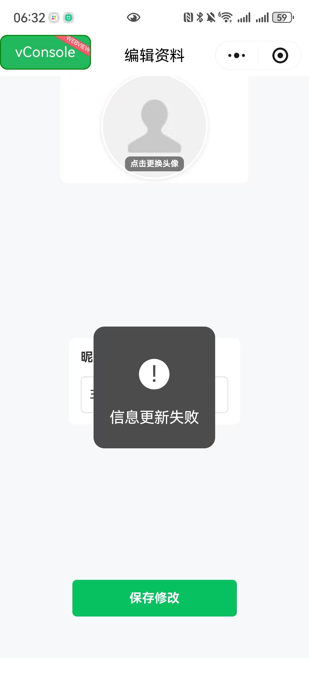

NPS 评分: 4/9
问题：数字活动码字号小、颜色淡，演讲者在台上念给学生听时需要眯眼找。
为何是问题：典型 Paper-Cut。核心任务"分享活动码"本应零阻力，却要"找半天"。
团队为何犯错：可能在电脑屏幕上开发时觉得"够大了"，没在真实讲台场景测试（知识的诅咒）。
改进方案：活动码放大至屏幕中央（48pt），提供二维码扫码进入。
问题：课程管理界面中，题目列表滑动时有明显卡顿。每个题目长度不固定（从短标题到长问题描述），滑动时有跳跃感。
为何是问题：违背效率与反馈原则。卡顿 = "这软件不靠谱"的潜意识印象。演讲者管理题目时体验差。
团队为何犯错：前端实现 bug - 可变高度列表项未正确处理虚拟滚动或高度计算，导致重新布局时出现跳帧。测试时可能只用了固定长度的示例数据。
改进方案：使用虚拟滚动库（如 react-window）处理可变高度列表，或预先测量每项高度缓存。
问题：界面极简但无任何视觉记忆点，首次使用无引导，不知道"这是什么"、"能做什么"。长期使用也无法产生"我是 PQ 用户"的认同感。
为何是问题：缺乏 Onboarding 和反思层设计。用户无情感连接，不会推荐。
团队为何犯错：陷入"知识的诅咒" + 专注功能实现，忽略用户教育和品牌故事。
改进方案： - 首次进入：3 步引导 + 示例课程 - 长期使用：课后生成"互动回顾"（"本次课程共 47 个问题，你的提问被点赞 12 次"） - 添加"关于 PQ"讲述理念
问题：在编辑资料等操作时，有时会出现"信息更新失败"的弹窗，但没有给出任何失败原因或解决建议。
为何是问题：违背了效率与反馈原则。用户不知道为什么失败、如何修复，只能反复尝试或放弃。
团队为何犯错：后端错误信息未传递到前端，或前端统一用通用错误提示"图省事"。没有考虑用户在出错时的无助感。
改进方案： - 显示具体错误原因（如"昵称包含非法字符"、"网络连接失败"） - 提供重试按钮或建议操作 - 记录用户已填写的内容，失败后不清空表单
PQ 问答是个"能用"的工具，但缺乏情感设计和细节打磨。
对我们项目的教训： 1. 不要陷入"知识的诅咒" - 定期邀请新用户测试 2. 优先解决 Paper-Cut - 微小挫败感会累积 3. 性能是 UX 的一部分 - 卡顿 = 不信任 4. 讲好你的故事 - 用户需要知道"为什么选择你"
软件工程课堂作业 - 基于《构建之法》第12章